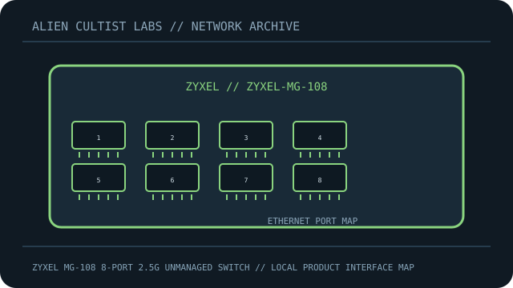

[ MODEL-SPECIFIC NETWORK HARDWARE ]
Zyxel MG-108 8-Port 2.5G Unmanaged Switch
Eight 2.5GbE copper ports in Zyxel’s MG-108 unmanaged multi-gigabit switch. This record is limited to the exact named model; revisions and regional SKUs may differ.

MODEL IDENTIFICATION: Match the complete model number and revision on the manufacturer label before applying specifications. Published link rates are nominal, not measured application throughput.
Published specifications and compatibility
| Exact product | Zyxel MG-108 8-Port 2.5G Unmanaged Switch |
|---|---|
| Archive subcategory | Unmanaged switches |
| Physical ports | 8 × 2.5GBASE-T RJ-45 (2.5G/1G/100M); no PoE or optical uplinks. |
| Host / chassis interface | Standalone unmanaged desktop switch; external power supply, 100–240V AC input. |
| Standards / protocol | IEEE 802.3bz 2.5GBASE-T with standard Ethernet auto-negotiation and flow control. |
| Rated link and switching rates | 2.5 Gb/s maximum per port and 40 Gb/s switching capacity. Aggregate capacity is not a single-host transfer rate. |
| Power and thermal notes | 12.24W maximum power consumption; external supply and fanless metal case. Check the regional MG-108 label for exact supply output. |
| Firmware / driver | Plug-and-play unmanaged switch; no host driver or management plane. |
| Compatibility guidance | Cat5e or higher copper supports multi-gigabit links within Ethernet channel limits. A 1GbE-only link partner negotiates at 1Gb/s. No VLAN or PoE support on the unmanaged MG-108. |
Model-specific deployment notes
The MG-108 is the eight-port member of Zyxel’s 2.5G unmanaged family; distinguish it from the five-port MG-105 by its exact model marking.
For a reproducible speed or interoperability test, record both link-partner models, cable/media, firmware, negotiated rate and test method. No benchmark is claimed in this archival record.
Manufacturer sources and documentation
- Zyxel Networks — official MG-105/MG-108 product pageManufacturer product family page for the exact eight-port model.
- Zyxel Networks — MG-108 manufacturer datasheet (PDF)Primary source for port count, switching capacity, power and installation details.
- Zyxel Networks — official support and download resourcesUse revision- and region-specific documentation for installation and compatibility decisions.
Source specifications describe rated capability; verify the label and current manufacturer documentation before purchase or deployment.